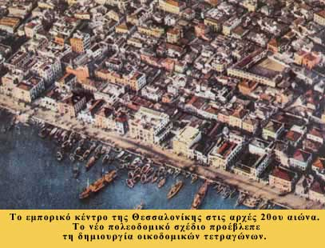

|

Στην παραδοσιακή μεσαιωνική κοινωνία η γεωργία αποτελούσε τη σημαντικότερη πηγή πλούτου με αποτέλεσμα να συγκρατεί τον πληθυσμό στην ύπαιθρο. Με τη μετάβαση όμως από τη γεωργική στη βιομηχανική εποχή η οικονομική δραστηριότητα μεταφέρθηκε από την ύπαιθρο στις πόλεις, που μετατράπηκαν σε βιομηχανικά κέντρα ή κέντρα του εμπορίου. Οι νέες οικονομικές συνθήκες και ευκαιρίες που παρουσιάζονταν με την εμφάνιση καινούριων επαγγελμάτων, οδήγησαν τους ανθρώπους της υπαίθρου να εγκαταλείψουν τον τόπο τους και να μετακινηθούν προς τα αστικά κέντρα για να αναζητήσουν την τύχη τους. Η ίδια μαζική έξοδος, ως συνέπεια των νέων οικονομικών συνθηκών παρατηρείται, με κάποια καθυστέρηση σε σχέση με τη Δυτική Ευρώπη, και στην τουρκοκρατούμενη Μακεδονία (κυρίως μετά το 1870). Το κύμα της εξόδου κατευθύνεται προς τις πόλεις που πραγματοποιούν τα πρώτα βήματα της εκβιομηχάνισης (π.χ. Νάουσα και Έδεσσα με τη νηματουργία), αλλά κυρίως προς αυτές, που εκμεταλλευόμενες τη μεγάλη ζήτηση στις διεθνείς αγορές για γεωργικά προϊόντα (σιτάρι, βαμβάκι, καπνός) μετατρέπονται σε κέντρα του εμπορίου. Ιδιαίτερα αναπτύσσονται οι πόλεις που ευνοούνται από τη γεωγραφική τους θέση. Η Ξάνθη, η Δράμα και οι Σέρρες οφείλουν την οικονομική τους ανάπτυξη στις γειτονικές καλλιέργειες της περιοχής. Η Καβάλα εξελίσσεται σε κέντρο διαμετακομιστικού εμπορίου, λόγω του λιμανιού της. Η Θεσσαλονίκη εκμεταλλευόμενη το λιμάνι της αλλά και το σιδηροδρομικό της δίκτυο γίνεται το μεγαλύτερο κέντρο εμπορίου της Μακεδονίας. Οι μικρές όμως πόλεις της μεσαιωνικής εποχής αδυνατούσαν να ικανοποιήσουν τις στεγαστικές ανάγκες των νεοφερμένων. Επίσης η πυκνή δόμησή τους με τους δαιδαλώδεις μικρούς και πολλές φορές αδιέξοδους δρόμους δημιουργούσαν προβλήματα στην ομαλή λειτουργία της αγοράς. Το γεγονός αυτό υποχρέωσε την οθωμανική διοίκηση να προσαρμοστεί στα νέα δεδομένα που δημιουργούσε η βιομηχανική εποχή και η αναδυόμενη αστική κοινωνία. Εκπονούνται σχέδια επεκτάσεων και διατυπώνονται νέοι πολεοδομικοί κανονισμοί, όπου προβλέπονται κοινόχρηστοι χώροι, μεγάλοι και φαρδιοί δρόμοι (η ανάγκη αυτή γίνεται επιτακτικότερη στις αρχές του 20ου αιώνα με την εφεύρεση του αυτοκινήτου) και κυρίως, για να αποφεύγεται η άναρχη δόμηση της μεσαιωνικής εποχής, εισάγεται η τεχνική των οικοδομικών τετραγώνων.
Την εποχή αυτή δημιουργούνται οι σύγχρονες πόλεις σε όλο τον κόσμο. Οι πόλεις όπως τις γνωρίζουμε σήμερα.
|
|